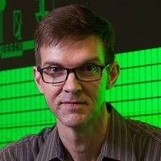
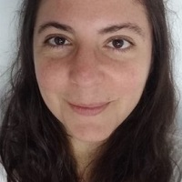
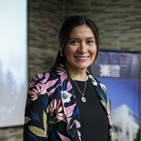
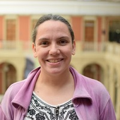

En esta 50 edición de las JAIIO contamos con las siguientes charlas plenarias:
-
Lunes 18. 18:00 hs. Acto de apertura de las JAIIO.
 |
Verónica DahlSimon Fraser UniversityInformatica Regenerativa: apuntar al bienestar humano y ecológico |
Históricamente, las Ciencias de la Computación fueron desarrolladas y desplegadas por las élites dominantes, dentro de organizaciones sociales basadas en jerarquías forzadas. La filosofía dualista -la visión del mundo según la cual los seres humanos están separados de la "naturaleza" y son superiores a ella- sigue siendo la base de estas jerarquías forzadas, que se han aprovechado durante los últimos 500 años para abaratar o degradar a los "otros" con el fin de explotarlos mejor, es decir, para quitarles mucho más de lo que se les da.
En coherencia con estos objetivos, la sociedad de la información ha permitido a los gobiernos y a las empresas utilizar la recopilación de datos, las estadísticas y los algoritmos como instrumentos para preservar y profundizar un statu quo desigual que está destruyendo el mundo de la vida y empobreciendo y marginando a las mujeres, a las personas de raza, a las diversidades y a las antiguas colonias; en resumen, a aquellos cuyo trabajo y recursos no remunerados o mal pagados sostienen a los grupos dominantes.
En esta charla argumentamos que la sociedad de la información debe adoptar explícitamente el objetivo de posibilitar el bienestar social y ecológico; describimos cómo varias ciudades del mundo ya están adoptando este objetivo utilizando el modelo "Doughnut Economics" de Kate Raworth -una útil visualización de dónde estamos frente a dónde tenemos que estar para sobrevivir y prosperar-; y proponemos una metodología de la sociedad de la información basada en la programación inferencial capaz de ayudarnos a salvar la brecha.
Bio: Verónica Dahl (twitter:@VerunicaDahl) es una informática teórica argentina-canadiense, reconocida entre los 15 fundadores del campo de la programación lógica. Se graduó en Computación Científica por la Universidad de Buenos Aires y obtuvo su doctorado en Inteligencia Artificial por la Universidad Aix-Marseille II. Es Profesora Emérita de Ciencias de la Computación y de Ciencias Cognitivas de la Universidad Simon Fraser (Canadá).
-
Martes 19. 18:00 hs.
 |
Sebastian ElbaumUniversity of VirginiaBridging Program Analysis and Autonomous Robots |
The soaring number of autonomous systems are bringing to prominence the insidiousness and potential impact of their faults. In turn, these faults highlight the limitations of existing program analysis techniques, which are being challenged by the immense and rich input space, the integration of cyber and physical semantics, the multiple sources of uncertainty, and the incorporation of machine learning components. In this talk I will provide an overview of some mobile robotic platforms and frameworks that we have targeted to ground our research efforts in addressing these challenges, the range of properties that those systems are meant to satisfy from robustness to ethical concerns, and the body of techniques we have developed to address those challenges that span from physical type analysis to trajectory generation, and from mixed-reality to DNN verification.
Bio: I am the Anita Jones Professor of Computer Science at the University of Virginia, and I am one of the founders of the Laboratory for Engineering Safe Software (LESS Lab). My research aims to build dependable systems through domain-specific analysis techniques. My teaching focuses on instilling cost-effective software development principles.
I am the recipient of an NSF Career Award, an IBM Innovation Award, a Google Faculty Research Award, an FSE Test of Time Award 2018, several ACM SigSoft Distinguished Paper Awards (FSE2006, ICSE2008, ICSE2012, ISSTA2013, ICSE2016), several best paper and distinguished artifacts awards (ESEM2011, IROS2016, ISSTA2017, ISSTA2020), mostly for empirically studying program analysis and software testing challenges, and developing automated techniques for addressing them. My current development and analysis work is focused on autonomous systems.
I served as Program Co-Chair of the 2015 International Conference on Software Engineering, Program Chair for the 2007 International Symposium on Software Testing and Analysis, Program Co-Chair for the 2008 Empirical Software Engineering Symposium, Co-Editor for the Information and Software Technology Journal, and as Associate Editor of the ACM Transactions on Software Engineering and Methodologies Journal. I am the Steering Committee Chair for ICSE. I was recognized as a Distinguished Scientist by the Association for Computing Machinery for my contributions to computing, and as a Fellow by the IEEE for my contributiosn to testing evolving systems.
I received my Ph.D. from the University of Idaho, and a Systems Engineering degree from Universidad Catolica de Cordoba, Argentina. I spent a significant part of my academic career at the University of Nebraska, where I co-founded two international recognized labs, the E2 Software Engineering Lab and the Nimbus Robotics Lab. I have spent my sabbaticals as a research scientist or research fellow at Google (Mountain View, USA), CNR (Pisa, Italy), and UCL (London, UK).
-
Miércoles 20. 18:00 hs.
 |
Walter Sosa EscuderoUdeSABorges, Big Data y yo
|
¿Ya se dijo todo sobre Borges? ¡Pues no! A su obra vasta y generosa no se accede por una sola puerta de entrada, sino por una infinidad de ventanas, pasadizos y claraboyas hacia un universo que, una vez conocido, ya no se puede ni se quiere abandonar.
En su fascinante y adictivo libro "Borges, Big Data y yo" de Editorial Siglo XXI, Walter Sosa Escudero propone una de esas entradas: la ciencia de datos. En efecto, los números, infinitos, mapas, algoritmos, chances y corazonadas, ficciones y realidades están tan presentes en la obra de Borges como en la práctica estadística y el uso hoy omnipresente de big data.
Bio: Walter Sosa Escudero (@wsosaescudero en twitter e instagram): PhD in Economics (University of Illinois at Urbana-Champaign), Lic. en Economía (UBA), se especializa en econometría y estadística aplicada a cuestiones sociales. Sus trabajos de investigación se encuentran en publicaciones nacionales e internacionales incluyendo Journal of Econometrics, Journal of Economic Inequality y Econometric Theory, entre otros. Es profesor de tiempo completo en la Universidad de San Andrés, en la cual ha dirigido su departamento de Economía y sus programas de maestría y licenciatura. Es profesor titular de Econometría en la Universidad Nacional de La Plata e investigador invitado del Centro de Estudios Distributivos, Laborales y Sociales (CEDLAS). Visita recurrentemente la Universidad de Illinois, donde dicta clases de grado y posgrado. Agrega a la investigación y docencia una relevante agenda de divulgación científica. Fue orador invitado en TEDXRioDeLaPlata y autor de Que es (y que no es) la Estadística (Siglo XXI, Colección Ciencia Que Ladra), además de escribir frecuentemente para los principales diarios argentinos (La Nación y Clarín, entre otros). Ha recibido los premios Fulvio Pagani/ARCOR, Bernardo Houssay (Investigador Joven), Konex (a las 100 personalidades má destacadas en las Humanidades, 2005-2015), el Premio EGSO como el mejor profesor del PhD en economía de la Universidad de Illinois y fue elegido por la Fundación BGH como uno de los 100 argentinos innovadores. Fue presidente de la Asociación Argentina de Economía (2012-2014). Es investigador principal del CONICET y miembro titular de la Academia Nacional de Ciencias Económicas.
-
Jueves 21. 18:00 hs.
|  |
John AycockUniversity of CalgaryA History of Retrogame Archaeology |
Why on earth would anyone study old computer games, and what can we learn from them? I tell the story of how the solution to a teaching problem—applying the study of game history in a novel and practical way—became a line of interdisciplinary research. Along the way, this "retrogame archaeology" intersected with real archaeology and the drafting of a manifesto in Europe, an activity which sounds more subversive than it really was. At the same time, this is not only archaeology: I argue that the reverse-engineering of old games that I do falls under the umbrella of technical history, and is a type of research that is even accessible to people without a computer science background.
John Aycock es Profesor Asociado en Ciencias de la Computación de la Calgary University, en Calgary, Canadá.
Su tema de investigación actual es la arqueología computacional de videojuegos, pero anteriormente pasó por temas relacionados como compiladores, ingeniería inversa y análisis de virus.
Bio: Tiene una prolífica carrera académica en temas que, en principio, no parecen académicos, pero el rigor con el que trata la retrocomputación convierte sus textos en un fascinante viaje dentro de los textos de programas, junto a las personas que los escribieron.
Publicó el libro "Retrogame Archeology" (Springer, 2016), y este año publicó el artículo de debate "The coming tsunami of digital artefacts: moving forward" Antiquity (Cambridge UP), una prestigiosa revista de Arqueología tradicional.
https://pages.cpsc.ucalgary.ca/~aycock/
-
Viernes 22. 18:00 hs.
Qué hacen nuestras Startups.
Moderan Rosita Wachenchauzer (FI-UBA) y Ricardo Medel (Fundación Sadosky).
Panelistas: Federico Carrone (LambdaClass), Gonzalo Goral (Mecaris SAS) y Pablo Deymonnaz (Rural Mesurer).
-
Lunes 25. 18:00 hs.
|  |
Mariela Rajngewerc (MetaDocencia), Patricia Loto (MetaDocencia) y Yanina Bellini Saibene (MetaDocencia, INTA)Enseñando a enseñar tecnología sin perder a nadie en el camino. |
Metadocencia nace en marzo de 2020 cuando la pandemia nos obligó a cambiar la manera en que enseñamos y aprendemos. En ese momento nos encontramos casi sin tiempo ni recursos pero con muchas ganas de ayudar y compartir nuestra experiencia con otras y otros docentes. Comenzamos dando un taller para compartir métodos educativos basados en evidencia y que se pudieran aplicar de manera sencilla. También brindamos recursos abiertos para fomentar prácticas de enseñanza eficaces e invitamos a las personas a compartir su experiencia y formar una comunidad. Un año después abrimos 3 nuevos talleres que incluyen como enseñar a programar y llegamos a más de 1500 personas en 30 países. En esta charla contaremos sobre algunos de los valores fundamentales que nos definen: encontrarnos con nuestras/os estudiantes en su lugar y atendiendo a su contexto en Latinoamérica. Esto significa no hacer suposiciones sobre su conocimiento de tecnología o sobre el acceso y la disponibilidad de Internet, diferencias culturales, barreras y necesidades específicas. Queremos compartir lo que aprendimos enseñando tecnología en comunidad.
-
Martes 26. 18:00 hs. .
Martina G. VilasInstituto Ernst StrüngmannThe Turing Way: una guía online para una ciencia de datos reproducible y abierta. |
Bio: Martina Vilas es una doctoranda en Neurociencia Cognitiva en el Instituto Ernst Strüngmann en Frankfurt, Alemania. Su investigación se enfoca en desarrollar modelos computacionales que ayuden a entender como el cerebro procesa información abstracta. También es una colaboradora principal del proyecto The Turing Way, una guía online para una ciencia de datos reproducible, ética y colaborativa.
-
Miércoles 27. 18:00 hs.
David Bernal NeiraAssociate Scientist in Quantum Computing at NASA - USRAEnfoques computacionales modernos para optimización discreta no lineal y aplicaciones en Ingeniería de Procesos |
Los problemas de optimización surgen en diferentes áreas de la Ingeniería de Sistemas de Procesos (PSE), y resolver estos problemas de manera eficiente es esencial para abordar importantes aplicaciones industriales. Debido a la complejidad (práctica y teórica) de ciertos problemas de optimización combinatoria, en los últimos años ha habido un desarrollo en métodos no convencionales para su solución. En muchos casos estos nuevos métodos dependen del desarrollo de técnicas basadas en computación diferente al modelo clásico de computación de von-Neumann. Una de estas alternativas es a partir de computadores que procesan información de acuerdo a las leyes de la mecánica cuántica, computadores cuánticos. Los computadores cuánticos tienen el potencial de resolver de manera eficiente problemas computacionales desafiantes. Sin embargo, los computadores cuánticos disponibles no pueden resolver problemas prácticos; están limitados a tamaños pequeños y no manejan bien las restricciones. En esta charla, presentaremos una introducción a algunos de los algoritmos diseñados para correr en computadores cuánticos cuyo objetivo es resolver problemas de optimización discreta. Se proponen algoritmos híbridos cuánticos clásicos para resolver problemas no lineales enteros mixtos (MINLP) y aplicar estrategias de descomposición para descomponer los MINLP en subproblemas de Optimización binaria cuadrática sin restricciones (QUBO) que pueden resolverse con computadores cuánticos. También se cubrirán diferentes enfoques para resolver problemas de QUBO a través de métodos computacionales no convencionales, incluidos, entre otros, algoritmos cuánticos, y se discutirá cómo estos enfoques son capaces de superar los algoritmos de solución clásicos.
Bio: David E. Bernal Neira joined the Quantum Artificial Intelligence Laboratory (QuAIL) at the NASA Ames Research Center in July 2021. He was part of the Feynman Quantum Academy Fellowship from QuAIL and the Universities Space Research Association (USRA) in 2019. He received his Ph.D. in Chemical Engineering from Carnegie Mellon University with Ignacio E. Grossmann. Before that, he received a M.Sc. in Chemical Engineering, and a B.Sc. in Physics and a B.Sc. in Chemical Engineering from the Universidad de los Andes in Bogotá, Colombia. His current research lies at the intersection of chemical and process systems engineering, optimization methods, and quantum computing. (https://ti.arc.nasa.gov/profile/neira/).
-
Jueves 28. 18:00 hs.
 |
Brittany Johnson-MatthewsGeorge Mason UniversityTowards Building Ethically-Sound Data-Driven Software |
More and more, society is augmenting and even replacing human decision-making with software. Often, the decisions that these software systems make are provided by machine learning models that have been integrated into the software. Despite the widespread use of these technologies, there Is still much we don’t understand about guaranteeing equitable, safe outcomes in practice. This is supported by numerous real-world examples that display the potential of these systems to behave in unexpected, undesirable ways that have negative impacts on society. To prevent these behaviors, we need support for improving how we design, build, analyze, and validate data-driven software with potential fairness or ethical concerns. In this talk, I will present recent research efforts in supporting the development of fair, ethically-sound data-driven software. I will also describe open problems in supporting ethical software development practices and ways we can potentially fill these gaps in practice. Overall, I will argue that enabling and ensuring software ethics requires an interdisciplinary approach to solving research challenges across computer science and throughout the data-driven software development pipeline.
Bio: Dr. Brittany Johnson-Matthews is an Assistant Professor in the Department of Computer Science at George Mason University where she directs the INSPIRED (INterdisciplinary Software Practice Improvement Research and Development) Lab. She received her Ph.D. in Computer Science from North Carolina State University (2017), after getting her B.A. in Computer Science from the College of Charleston (2011). Her research explores sociotechnical problems pertaining to developer productivity and software development/use, such as tool support, work environments, ethics, and software for social good. Her work is interdisciplinary, cross-cutting with research in software engineering, human-computer interaction, and machine learning.
-
Viernes 29. 18:00 hs. Acto de cierre de las JAIIO.